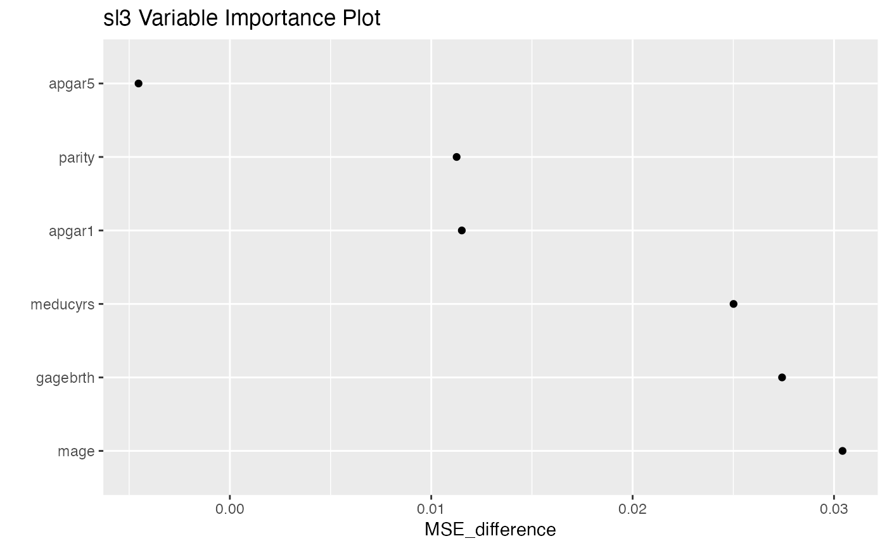

Variable Importance Plot
The two-column data.table returned by
importance, where the first column is the covariate/groups
and the second column is the importance score.
The maximum number of predictors to be plotted. Defaults to the
minimum between 30 and the number of rows in x.
A ggplot of variable importance.
# define ML task
data(cpp_imputed)
covs <- c("apgar1", "apgar5", "parity", "gagebrth", "mage", "meducyrs")
task <- sl3_Task$new(cpp_imputed, covariates = covs, outcome = "haz")
# build relatively fast learner library (not recommended for real analysis)
lasso_lrnr <- Lrnr_glmnet$new()
glm_lrnr <- Lrnr_glm$new()
ranger_lrnr <- Lrnr_ranger$new()
lrnrs <- c(lasso_lrnr, glm_lrnr, ranger_lrnr)
names(lrnrs) <- c("lasso", "glm", "ranger")
lrnr_stack <- make_learner(Stack, lrnrs)
# instantiate SL with default metalearner
sl <- Lrnr_sl$new(lrnr_stack)
sl_fit <- sl$train(task)
importance_result <- importance(sl_fit)
importance_plot(importance_result)
